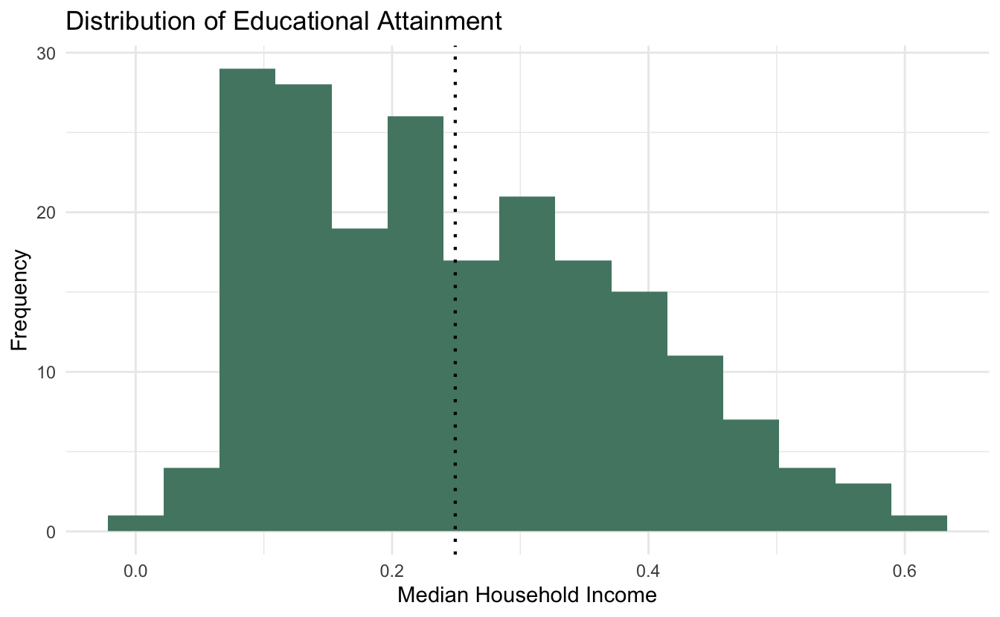
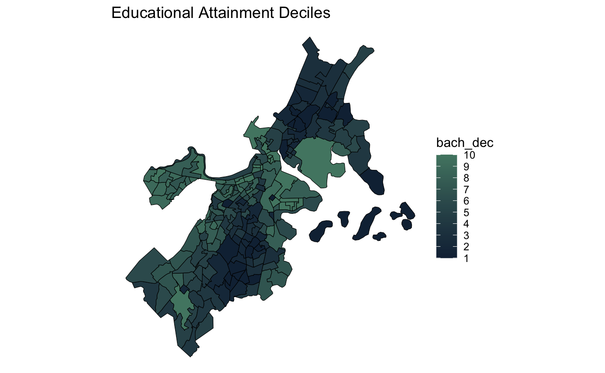
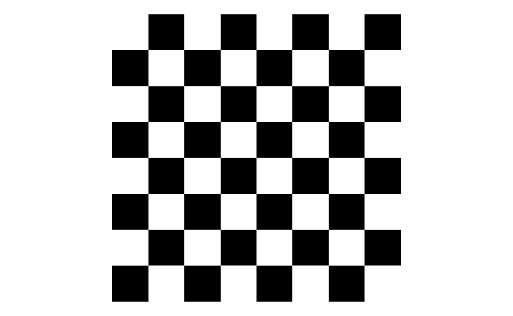
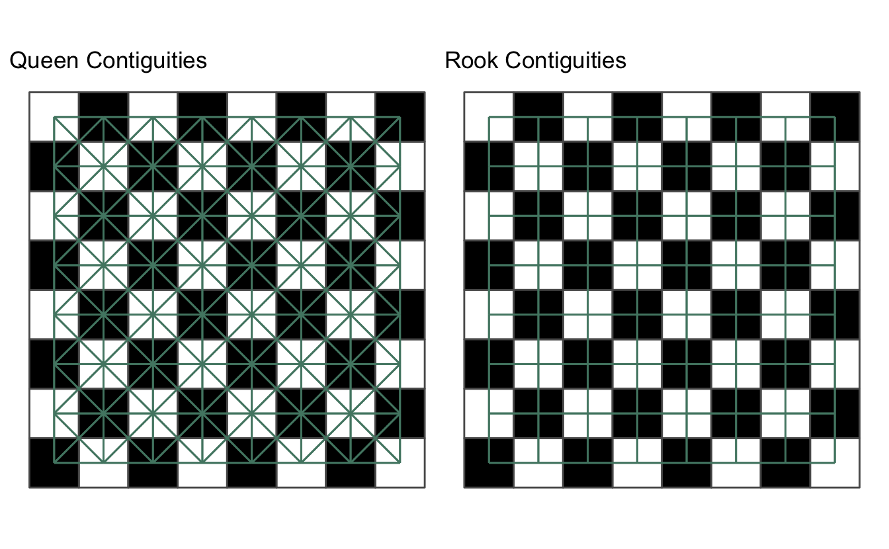
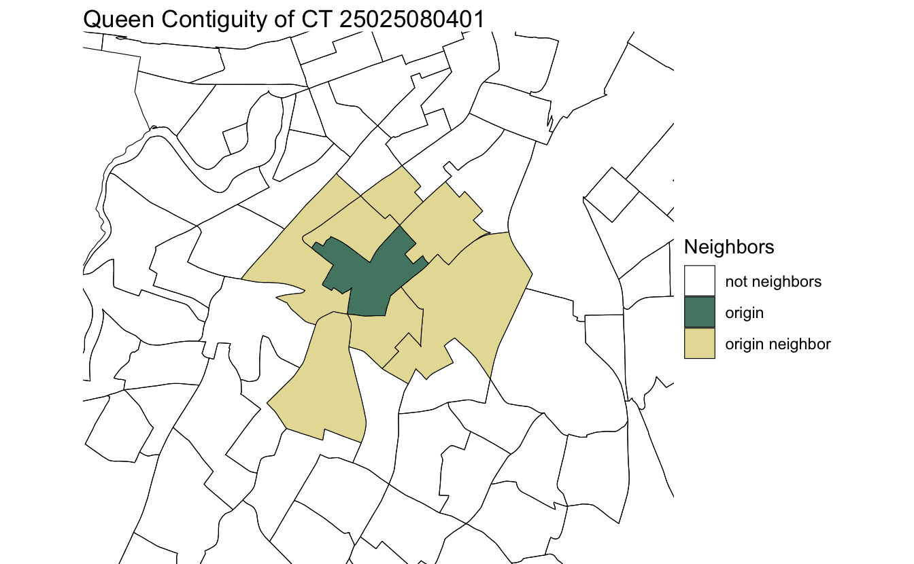
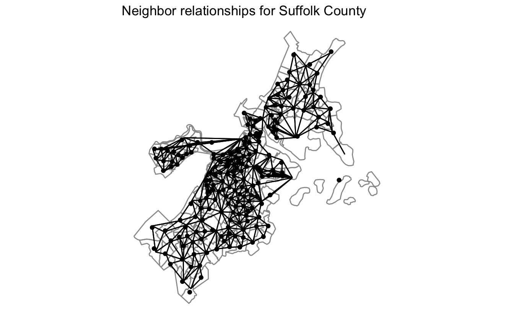
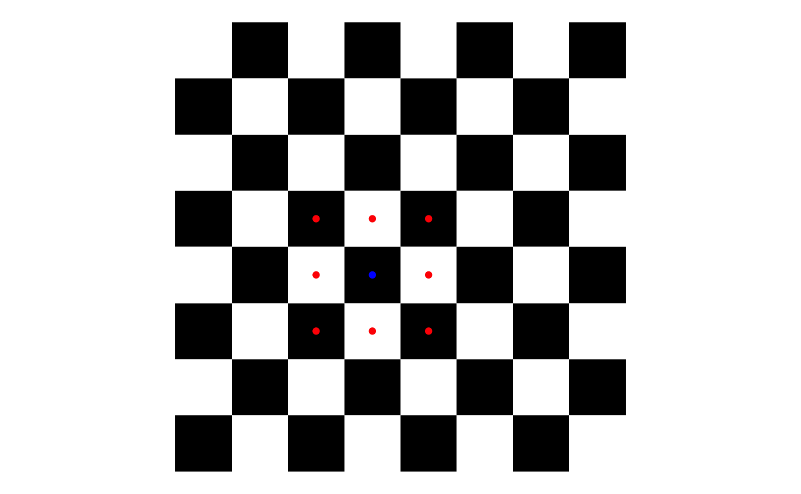

Tobler’s first law of geography states that
“everything is related to everything else, but near things are more related than distant things.” - Waldo Tobler (source)
In regular statistical analyses, we look at the relationship between two variables irrespective of their place in space. If there is a desire to account for space, this will likely be done by creating groups or regional identifiers that can be controlled for in a linear regression. For example, neighborhood or state level dummy variables or IDs.
We can move beyond this naive approach to incorporating space into our analysis to something a bit more explicit. We can check to see if there are measurable spatial relationships in our dataset as opposed to strictly measuring numeric correlation.
This post will introduce the concept of spatial autocorrelation. First we will create a dataset to work with. Then we’ll review neighbors, weights, and autocorrelation.
In this analysis, we will explore the spatial relationship of bachelor’s degree attainment in Suffolk County (Greater Boston). The data we will be using comes from the Urban Informatics Toolkit’s associate package {uitk}. This can be installed with remotes::install_github("josiahparry/uitk").
The package exports acs_raw which is a tibble containing socio-economic and demographic characteristics from the American Community Survey (ACS) as provided by the Boston Area Research Initiative (BARI). From the tibble, we’ll select a few variables to explore throughout. These are the median household income (med_house_income), proportion of the population that uses public transit (by_pub_trans), proportion of the population with a bachelor’s degree (bach), and then FIPS code. Additionally, there are a few missing values in our variables. We’ll fill those in with median imputation.
The object suffolk_county contains the boundary of each census tract and will be joined to the ACS data.
library(sf)
library(tidyverse)
acs <- select(uitk::acs_raw,
fips = ct_id_10, med_house_income,
by_pub_trans, bach) %>%
mutate(fips = as.character(fips),
across(.cols = c(med_house_income, by_pub_trans, bach),
~replace_na(.x, median(.x, na.rm = TRUE))))
acs_sf <- left_join(uitk::suffolk_county, acs, by = "fips")Now that we have this object we can visualize how median household income is distributed numerically and geographically.
acs_sf %>%
ggplot(aes(bach)) +
geom_histogram(bins = 15, fill = "#528672") +
theme_minimal() +
geom_vline(aes(xintercept = mean(bach)),
lty = 3, size = .75) +
labs(x = "Median Household Income", y = "Frequency",
title = "Distribution of Educational Attainment")

acs_sf %>%
mutate(bach_dec = ntile(bach, 10)) %>%
ggplot(aes(fill = bach_dec)) +
geom_sf(lwd = 0.2, color = "black") +
theme_void() +
scale_fill_gradient(high = "#528672", n.breaks = 10) +
labs(title = "Educational Attainment Deciles")

From the graph and map we can see two things:
How can we check to see if there is a significant spatial relationship? We’ll need to look at the surrounding values of each observation.
Typical correlation measures explores how two continuous variables are related to each other. Does one increase when the other does? Spatial autocorrelation looks to see if a variable has any relationship in how it is distributed across a geography. With spatial autocorrelation we can ask the question “are like values near each other?” With measures of spatial auto correlation we can only know if similar values cluster near each other. Or, inversely, near values are different from each other and far ones are similar.
The most common measure of spatial autocorrelation is Moran’s I. Moran’s I is a number that typically ranges between -1 and 1 much like other correlation measures. Though Moran’s I can exceed either boundary in some rare cases.
When I approaches 1, we can interpret Moran’s I as informing us that similar values tend to be nearby each other. When I approach -1, near values are dissimilar. We cannot determine whether the clusters are positively or negatively associated, though!
If we assume that there is a spatial relationship in our data, we are taking on the belief that our data are not completely independent of each other. If nearer things are more related, then census tracts that are close to each other will have similar values. In the urban literature there is a lot of discussion of “spillover effects." A spillover effect is when a change in one neighborhood affects adjacent / nearby neighborhoods. This is in essence what we are trying to evaluate.
Because we are concerned with what surrounding observations look like, we need to know which observations are nearby. There are a number of different ways in which neighbors can be identified. With polygon data we identify neighbors based on their contiguity. To be contiguous means to be connected or touching—think of the contiguous lower 48 states.
The two most common contiguities are based on the game of chess. Let’s take a simple chess board (code included because it’s a fun trick 😄).
chess_board <- expand.grid(x = 1:8, y = 1:8) %>%
mutate(z = ifelse((x + y) %% 2 == 0, TRUE, FALSE))
board <- chess_board %>%
ggplot(aes(x, y, fill = z)) +
geom_tile() +
scale_fill_manual(values = c("white", "black")) +
theme_void() +
coord_fixed() +
theme(legend.position = "none")
board

In chess each piece can move in a different way. All pieces, with the exception of the knight, move either diagonally or horizontally and vertically. The most common contiguities are queen and rook contiguities. In chess, a queen can move diagonally and horizontal and vertically whereas a rook can only move horizontal and vertically.

We extend this idea to polygons. Queen contiguities identify neighbors based on any polygon that is touching. With rook contiguities, we identify neighbors based on polygons that touch on the side. For most social science research, we only need to be concerned with queen contiguities.
While a chess board might make intuitive sense, geographies are really wonky in real life. Let’s take a random census tract in Suffolk County and look at its queen contiguity.

You can see that any tract that is touching, even at a corner, will be considered a neighbor to the point in question. This will be done for every polygon in our dataset. We can create a network diagram of our spatial object which can be helpful or exploring these spatial relationships visually and encourage a network based approach.

Once neighbors are identified, they can then be used to calculate spatial weights. These weights will be used to identify the average local household income for surrounding census tracts. However, prior to doing so, we must know how much influence each observation will have in calculating that local estimate.
The typical method of calculating the spatial weights is through row standardization. In essence, each neighbor that touches our census tract will be assigned an equal weight. We do this by assigning each neighbor a value of 1 then dividing by the number of neighbors. So if we have 5 neighboring census tracts, each of them will have a spatial weight of 0.2 (1 / 5 = 0.2).
Going back to the chess board example, we can take the position d4 and look at the queen contiguities. There are 8 squares that immediately touch the square. Each one of these squares is considered a neighbor and given a value of 1. Then each square is divided by the total number or neighbors, 8.

Very simply it looks like the following
(d4_nbs <- rep(1, 8))
#> [1] 1 1 1 1 1 1 1 1
d4_nbs / length(d4_nbs)
#> [1] 0.125 0.125 0.125 0.125 0.125 0.125 0.125 0.125Now that we have a general understanding of neighbors and weights we can go ahead and and begin to create do the work in R. For this we will use the package sfweight. Currently the package is not on CRAN and needs to be installed from GitHub. Install the package with the following: remotes::install_github("josiahparry/sfweight").
There are two functions that we will be using from this package: st_neighbors() and st_weights(). The former will take the geometry column of an sf object and create a list column containing the neighbor indexes for that observation. st_weights() will take the neighbors list and calculate a list column of weights. These functions work nicely with the tidyverse workflow so we can calculate both the neighbors and weights in one mutate function call.
library(sfweight)
acs_nbs <- acs_sf %>%
mutate(nb = st_neighbors(geometry),
wt = st_weights(nb))It was easy as that. We can look at the neighbor and weights columns. Notice how they are always of the same length for each row.
Neighbors list:
pull(acs_nbs, nb)[1:5]
#> [[1]]
#> [1] 2 15 168 171 172 179 180
#>
#> [[2]]
#> [1] 1 71 180
#>
#> [[3]]
#> [1] 45 50 92 122
#>
#> [[4]]
#> [1] 30 84 127 135 136 138
#>
#> [[5]]
#> [1] 34 87 100 108Weights list:
pull(acs_nbs, wt)[1:5]
#> [[1]]
#> [1] 0.1428571 0.1428571 0.1428571 0.1428571 0.1428571 0.1428571 0.1428571
#>
#> [[2]]
#> [1] 0.3333333 0.3333333 0.3333333
#>
#> [[3]]
#> [1] 0.25 0.25 0.25 0.25
#>
#> [[4]]
#> [1] 0.1666667 0.1666667 0.1666667 0.1666667 0.1666667 0.1666667
#>
#> [[5]]
#> [1] 0.25 0.25 0.25 0.25With all of our measures in place, we can calculate Moran’s I and check to see if there is any spatial autocorrelation.
acs_nbs %>%
moran_test(bach, nb, wt)
#>
#> Moran I test under randomisation
#>
#> data: var
#> weights: listw
#>
#> Moran I statistic standard deviate = 14.037, p-value < 2.2e-16
#> alternative hypothesis: greater
#> sample estimates:
#> Moran I statistic Expectation Variance
#> 0.596022182 -0.004950495 0.001833067With this result we can tell that there is a somewhat strong spatial relationship in bachelor’s degree attainment throughout Suffolk County. To explore where these clusters are we can use the local Moran’s I. This will be covered in a forth coming post.
Sign up for our (infrequent) newsletter to stay up to date.